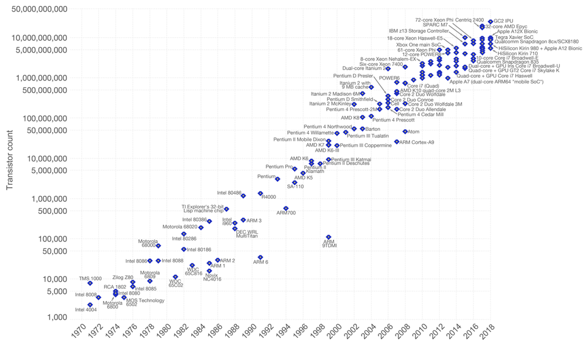
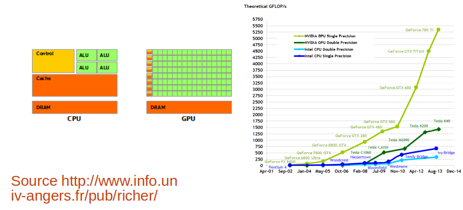
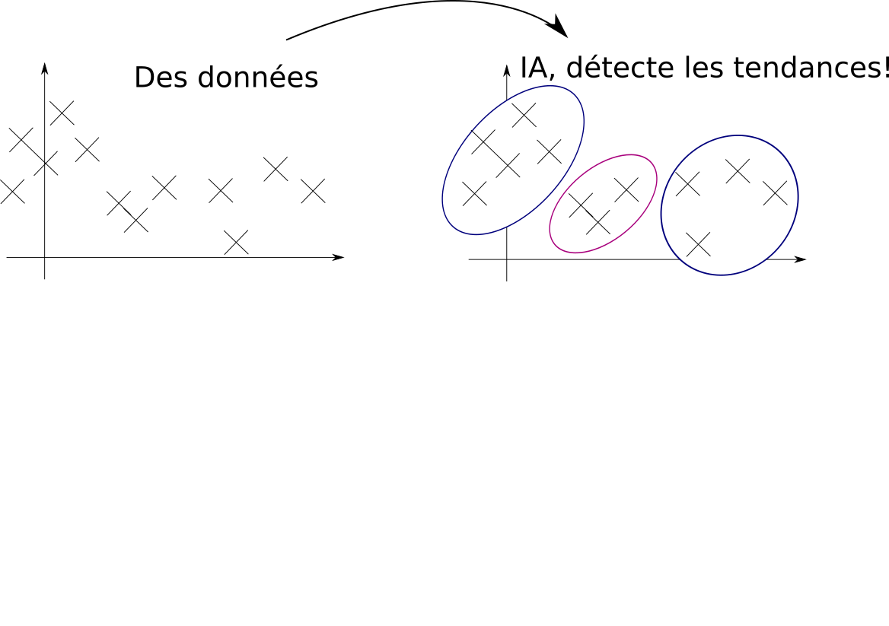
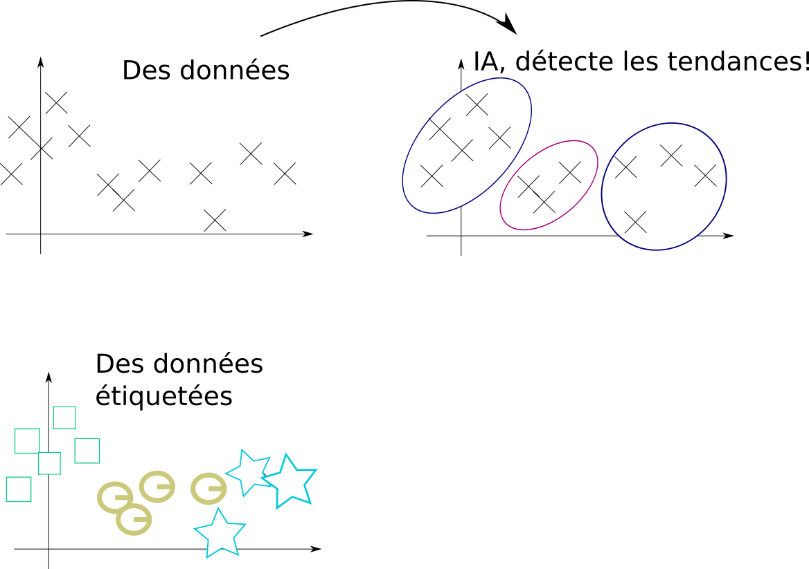
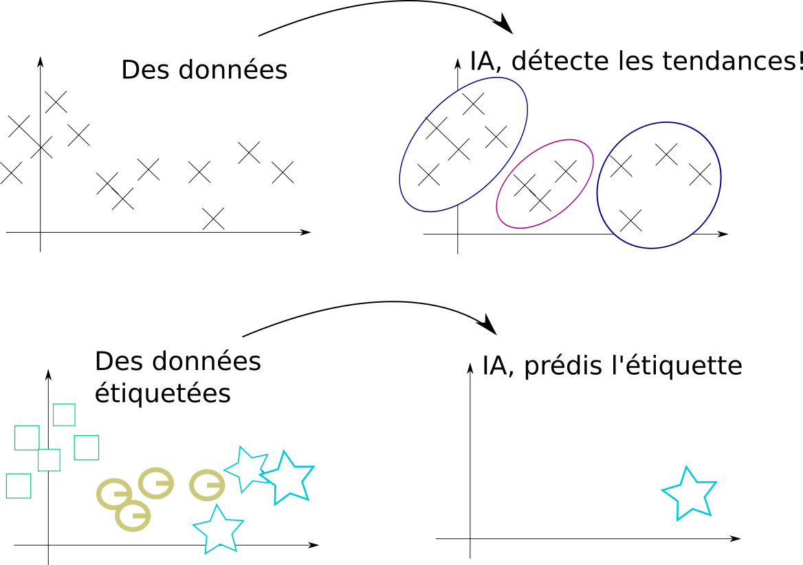
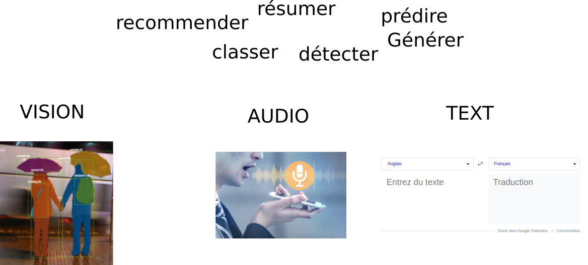
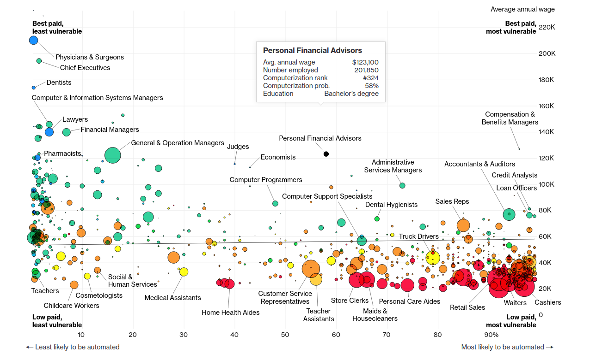
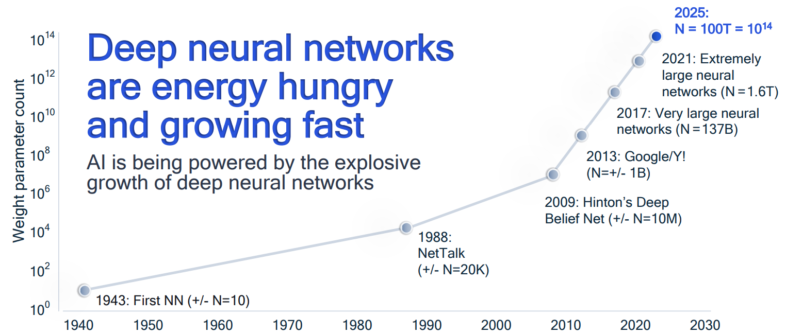

Que peut-on faire avec l'IA aujourd'hui ?
Qui sommes-nous ?
L'Association IA PAU rassemble dans la bonne humeur chercheurs, enseignants, étudiants, entrepreneurs autour du traitement des données pour la sphère économique, le monde académique et le grand public autour de projets collaboratifs.
- Paul Gay - Ingénieur de recherche - CNRS-UPPA
- Philippe Maury - Accompagnateur création d'entreprises Technopole Helioparc-Pau
Sondage
Qui a entendu parler de:
- ... GPT, ou Dalle ou Deep learning (encore personne au printemps 2022)
- ... Biais dans l'IA
- ... RGPD
Définition
Qu'est ce que l'IA ?- Ce n'est pas très bien défini
- Écriture de règles
- Aptitude à apprendre sans programmation explicite
- Extraire des connaissances à partir de données
- L'IA (forte), ça n'existe pas
Une définition simple :
Retirer de l’information d’un grand volume de donnéesPourquoi maintenant ?
Alan Turing : what we want is a machine that learn from experienceLes algorithmes précédent les applications
Accélération de l'IA:- Plus de données
- Plus de puissance de calcul
- Plus d'outils (open source)
Plus de puissance de calcul

Source: https://ourworldindata.org/
Encore plus de puissance de calcul

Une définition simple :
Retirer de l’information d’un grand volume de donnéesUne définition simple :
Retirer de l’information d’un grand volume de donnéesUne définition simple :
Retirer de l’information d’un grand volume de données
Une définition simple :
Retirer de l’information d’un grand volume de données
Une définition simple :
Retirer de l’information d’un grand volume de données
Une définition simple :
Retirer de l’information d’un grand volume de données
Attention au coût des annotations!
Que sait faire l'IA ?
Retirer de l’information d’un grand volume de données
Applications des IA faibles:
administration, relation client, média, médecine, cinéma, maintenance, robotique, finance,...
Automatisation des emplois
Credits : Anis AYARI
https://job-futuromat.iab.de
"augmentation" plus que "disparition"
4 exemples d'IA
- Audio : Transcription d'un journal télévisé
- Vision : Détection d'objets avec YOLO
- Texte : Génération automatique de texte
Utilisation d'outils opensource.
Et enfin ChatGPTApplication 1 (audio)
Transcription
et illustration de la généralisationApplication 2 (Vision)
Reconnaissance d'objet
Application 3 (texte)
Génération automatique de texte
Analyse de sentiment
ChatGPT (crédits to Nicolas Girardin, A.P.I. Conseil)
Et ChatGPT ?
Entraînement d'un modèle de langage
Sur l'ensemble d'internet, avec (peut-être) 384 GPUs pendant 3.5 mois
Et une correction manuelle pour construire l'agent conversationnel ChatGPT
Projet IA
Développer un projet :
- Maturité des données
- Objectif clairs
- Acculturation : Data scientists, informaticiens, métiers, juristes, utilisateurs
Commencer prudemment et de manière pragmatique
Performances de modèles simples sont un bon indicateur
Le cloud
L'IA vue comme un service
versusGarder son indépendance et ses données
Impact Sociétal
Nous avons vu que ces modèles comportent des biais contenus dans les données- Les chiens dans la neige sont des loups
- Les personnes noires sont des singes
- Votre origine vous rend suscipicieux pour un prêt
Augmentation du risque quand l'algorithme manipule des données sensibles
Et l'explicabilité ?
Impact environnemental
- Une croissance exponentielle de la taille des modèles
- GPT-3 : 175 milliards de paramètres, appris sur 300 milliards de mots
- Et des effets rebonds... (cf GPU)
- Impact carbone du numérique ~= domaine de l'aviation
L'IA à Pau
Développons la communauté dans notre territoire !- Conférences thématiques
- IA & Société, Santé, Informatique Quantique
- Data challenges
- 150 étudiants de toute la France le temps d'un Hackaton